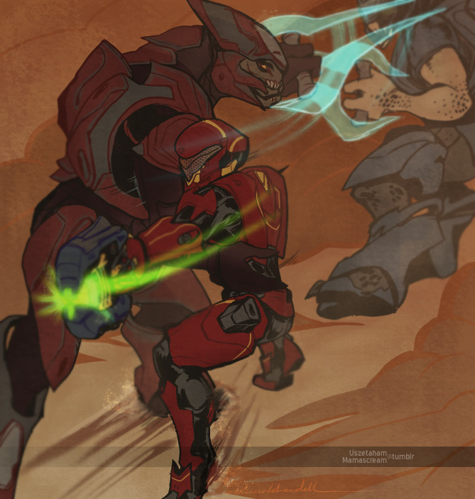

Usze and Vale versus some dead mother fraggers. I’ve been wanting to draw this since the first time I drew them together but I don’t often draw action scenes and I think that shows.
Dude in the back should prob be closer but I guess if you realize you’re switching dance partners it’s best to jump back and reasses their moves??